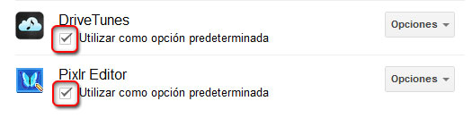
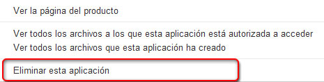

A continuación veremos el proceso que debemos seguir para eliminar aplicaciones de nuestra cuenta de Drive.
En primer lugar, debemos hacer clic sobre el menú Configuración.
Elegiremos la opción Administrar aplicaciones. Se abrirá un cuadro que mostrará un listado de todas las aplicaciones instaladas.
Podremos decidir si utilizaremos una aplicación como opción predeterminada para abrir archivos con un formato compatible. Si así lo deseamos, marcaremos la casilla de la aplicación en cuestión.

Asociado a cada aplicación aparece un menú desplegable de opciones. Si hacemos clic sobre él, podremos ver la página del producto, ver los archivos de nuestra cuenta que esta aplicación puede abrir y ver todos los archivos creados por la aplicación.
Por último, desde aquí podremos eliminar la aplicación de forma directa. Sólo tenemos que hacer clic sobre la opción Eliminar esta aplicación. Hecho ésto, veremos cómo desaparece del listado de aplicaciones de Drive.
